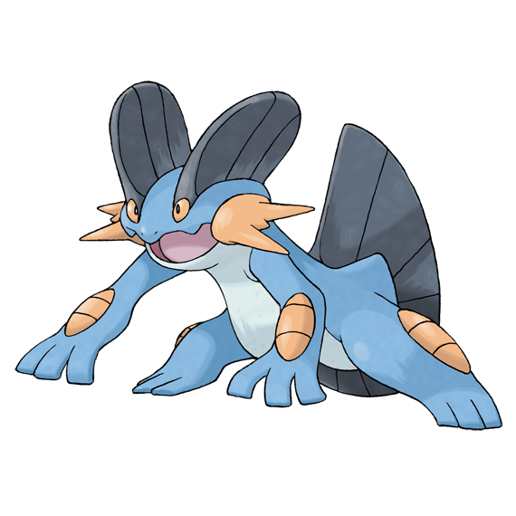
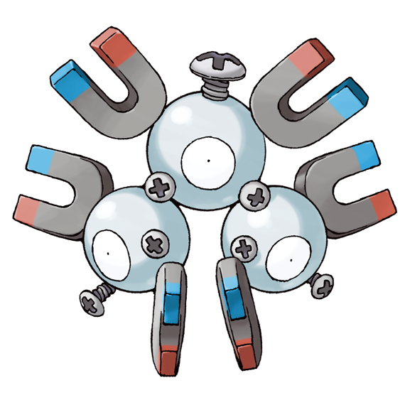

個人的に好きなゲームランキング（思い出補正あり）
-
第5位
グノーシア
宇宙で人狼するゲームです。 相手AIが優秀で本格的に人狼を楽しめます。
-
第4位
大逆転裁判1&2
ストーリーの伏線回収がきれいで面白いです。
今年の7月にSwitchでリメイクがでます。よかったらぜひ遊んでみてください。 -
第3位
テイルズ オブ ジ アビス
「生まれた意味を知るRPG」と名売っているだけによく考えさせられるストーリーになっています。
-
第2位
ポケットモンスター エメラルド
人生で一番やりこんだゲームです。上の画像に到達するまでめちゃめちゃやりこみました。
ちなみに初めて殿堂入りしたときのメンバーは、
「ラグラージ」「キノガッサ」「レアコイル」 「サメハダー」「オニゴーリ」「ボーマンダ」です
（画像は「https://zukan.pokemon.co.jp/」より引用）。- 
- 


-
第1位
ポケモン不思議のダンジョン 空の探検隊
「本当に悪いポケモンはいない」（≒「本当に悪い人はいない」）
というテーマで繰り広げられるストーリー展開は熱いです。